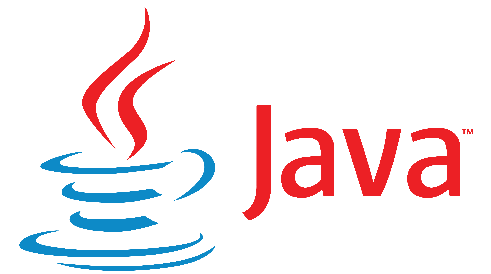

Assemblersprache

Atari Assembler (1981)
Assemblersprache ist im Prinzip Vereinfachung von Maschinensprache und somit die Grundlage für alle weiteren Programmiersprachen. Die erste Version von Assemblersprache wurde schon 1947 veröffentlicht. Heute spielt Assemblersprache in der Programmierung eine deutlich kleinere Rolle, weil sich der Aufwand, auf Assemblersprache zurückzugreifen in den meisten Fällen nicht lohnt. Außerdem sorgt die Komplexität von heutigen Computern dafür, dass Assemblersprache nur schwer einzusetzen ist. Dennoch ist Assemblersprache durch die Systemnähe sehr schnell.
BASIC

Atari BASIC (1983)
Die erste BASIC Version wurde 1964 als eine leicht lernbare Programmiersprache entwickelt. Es handelt sich um eine interpretierte Programmiersprache, die auf 8-bit Heimcomputern eine sehr große Rolle spielte. Das 1991 entwickelte Visual Basic stellt eine Weiterentwicklung vom früheren BASIC dar und wird noch heute verwendet. Charakteristisch für die ersten BASIC Versionen sind die Zeilennummern und der "goto" Befehl, der Zeilensprünge ermöglichte. Die Programmiersprache gab klare Fehlermeldungen und war universell einsetzbar.
Pascal
Free Pascal 3.2
Die kompilierte Programmiersprache Pascal wurde 1971 veröffentlicht. Sie wurde von Niklaus Wirth (einem Schweizer Informatiker) für Bildungszwecke eingeführt. Die Sprache sollte einfach zu lernen sein. Es handelt sich um eine kompilierte Sprache. Heute findet sich Pascal Code in der Verkehrstechnik, Raumfahrt und Medizintechnik wieder. Pascal Code ist leicht zu warten und übersichtlich.
C
C Logo
Die Programmiersprache C wurde 1972 veröffentlicht. Betriebsysteme wie Linux wurden mit C als Grundlage programmiert. Dadurch, dass es sich um eine low-level Sprache handelt und dadurch, dass es es eine kompilierte Sprache ist, ist diese deutlich schneller und effizienter als andere Sprachen. Die Syntax vieler Sprachen wie zum Beispiel "C++", "JavaScript", "PHP" und Python ist an C angelehnt.
C++

C++ Logo
Die kompilierte Programmiersprache C++ wurde 1979 als Erweiterung der Programmiersprache C entwickelt. Es handelt sich um einen Dialekt von C. Durch die vielseitige Einsetzbarkeit und die Geschwindigkeit wird C++ heute noch viel für System- und Anwendungsentwicklung verwendet.
Python

Python Logo
Die interpretierte Programmiersprache Python wurde 1991 veröffentlicht. Es handelt sich um eine high level, interpretierte Sprache. sie ist wie viele andere Sprachen plattformunabhängig und wird vielseitig eingesetzt. Ein Beispiel für die Einsetzung von Python Code ist ist Datenverwaltung. Außerdem ist Python gut für Lernzwecke einsetzbar, weil die Sprache leicht zu lernen ist. Python Code ist leicht zu warten und übersichtlich. Durch die "Entfernung vom System" ist die Sprache verhältnismäßig langsam.
Java

Java Logo
Die kompilierte Programmiersprache Java wurde 1995 veröffentlicht. Java ist eine objektorientierte Sprache und plattformunabhängig. Die Syntax der Sprache ist an C angelehnt. Java wird vielseitig eingesetzt. Ein Beispiel für die Eisetzung von Java Code ist Programmentwicklung. Ein weiterer wichtiger Aspekt von Java Code ist die Just-in-time-Kompilierung, die dafür sorgt, dass Teile des Codes in Maschincode übersetzt werden können.
JavaScript
JavaScript Logo
Die Programmiersprache JavaScript wurde 1995 entwickelt. Die interpretierte Sprache wird in Kombination mit HTML verwendet und ermöglicht somit die Programmierung von Logik für Internetseiten. Außerdem kann JavaScript bei dynamischen Webseiten Anfragen an den Webserver senden. Durch die vielen Funktionen, die JavaScript bietet ist die Kommunikation und Verknüpfung mit HTML unkompliziert. Obwohl der Name an Java erinnert, handelt es sich um eine unabhängige Sprache. Die Syntax von JavaScript ist an C angelehnt.
PHP
PHP Logo
die Programmiersprache PHP ("Hypertext Preprocessor", oder auch: "Personal Home Page Tools") wurde 1995 veröffentlicht. Es handelt sich um eine interpretierte Sprache. PHP ist eine serverseitige Programmiersprache und wird für die Entwicklung von dynamischen Webseiten verwendet. Somit verwaltet PHP Code HTML Code. PHP kann auf Internetprotokolle zugreifen und Datenbanken verwalten. Die Syntax von PHP ist an C angelehnt.